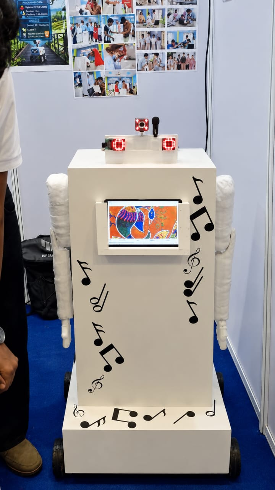
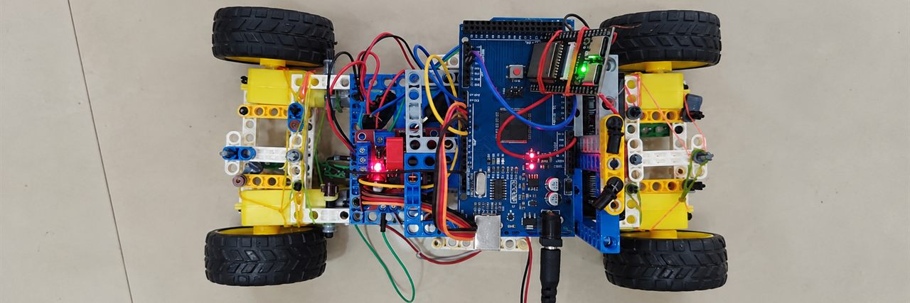
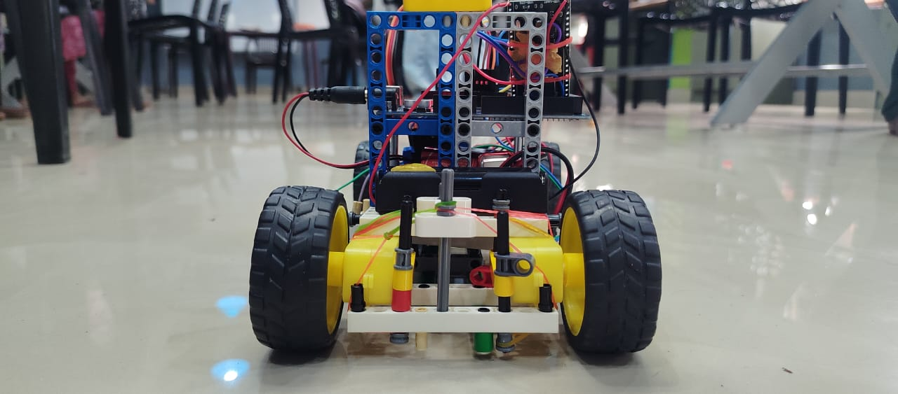
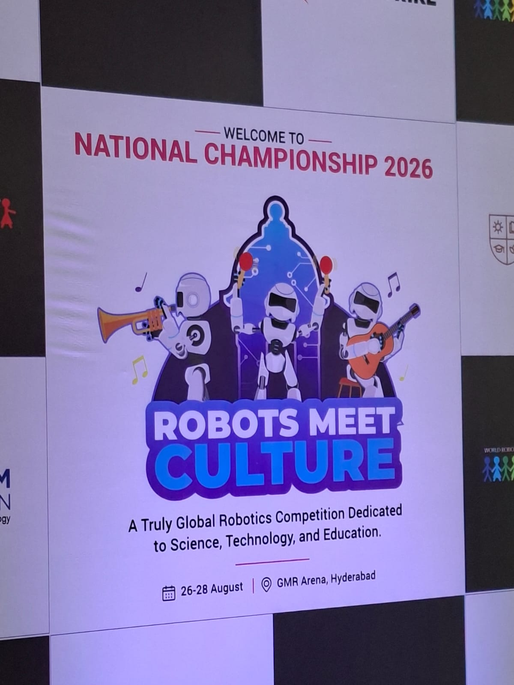
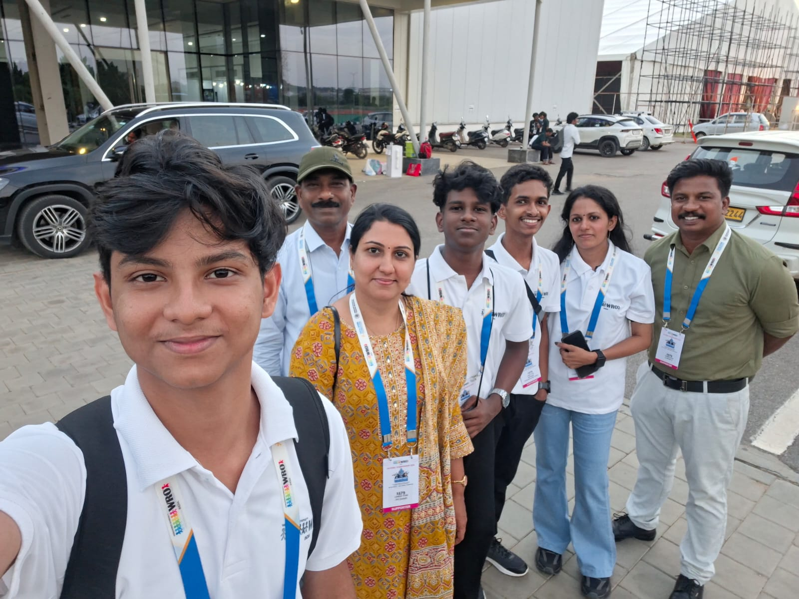

Lisieux TitanVaikom, KeralaWRO 2026 · Future Innovators
Keeper of
A robot that drives up to visitors, recognises Indian folk paintings and answers questions about them out loud.
- Recognises
- 15+ art styles
- Runs
- Fully offline
- Nationals
- 7th in India

01Why we built it
Most paintings in a museum get a small card: a name, a place, a date. The story behind a Warli dance or a Madhubani peacock doesn’t fit on it.
Folk painting traditions like Warli, Madhubani and Pattachitra are still practised by families and communities across India. Every shape in them means something. But when you see one on a wall, you usually get a title and not much else.
The theme of the World Robot Olympiad 2026 was Robots Meet Culture. We asked what a robot could actually do for culture, and landed on something simple: stand beside a painting, explain it clearly, and answer whatever people want to know.
“Because heritage deserves more than a label.”
From our exhibition poster at Nationals
02Try it
Pick a painting. Ask Keeper about it.
Keeper recognises more than 15 folk art styles. After our research, we picked these five to feature here. Choose one and it will tell you what you’re looking at, then answer follow-up questions.
You
What am I looking at?
Keeper
This is a Madhubani painting, from the Mithila region of Bihar. It shows a peacock with a fish curled into its body, two favourite Madhubani subjects. Notice the double outlines, and how almost no space is left empty.
Ask a follow-up
A scripted preview of the conversations Keeper has at exhibitions. The real robot hears spoken questions, works out its own answers and speaks them aloud. Answers here are short summaries; the artists and communities behind each tradition are the real experts.
03How it works
It looks. It listens. It answers.
Keeper does four things, and all of them happen on the robot itself.
-
01
Sees
A camera captures the painting in front of Keeper, and a recognition model works out which of the 15+ styles it knows the painting belongs to. With a few changes, it can learn any other style too.
-
02
Explains
The artwork appears on its screen while Keeper talks you through where it comes from and what to look for.
-
03
Listens
Ask a question out loud. Speech recognition turns it into text, a language model writes the answer, and Keeper says it back.
-
04
Stays offline
Nothing is sent to the internet. That matters in museums and heritage sites, where the signal is often poor.
And it comes to you.
Keeper doesn’t wait for people to walk up. It drives over to visitors on its own and starts the conversation by asking if there’s anything they’d like to know.
Keeper, rolling up“Hello! Is there anything you’d like to know?”
Who moves Keeper
- AIWheels and arm
- The AI inside Keeper is given control of its wheels and its arm, so it can decide for itself when to move.
- CodeHome-made routines
- Not every move comes from the AI. Some are still run by code we wrote, like the routines behind Keeper’s other home-made autonomous features.
What’s inside
The tech stack, as listed on our poster at Nationals.
- Main computer
- Raspberry Pi, running Raspberry Pi OS
- Motors & sensors
- Arduino
- Code
- Python, C, C++ and Bash
- Language models
- Mostly Qwen3.5 4B, sometimes Llama 3.1 8B, running locally
- Voice
- Whisper for speech-to-text, plus text-to-speech
- Body
- LED-matrix eyes, a display, arms and a wheeled base
04The build
It started as a LEGO car with wires everywhere.
The first Keeper fit on a tabletop, and it’s the one we took to Regionals in Kochi. It already worked: it ran the same AI, answered spoken questions and moved when the AI told it to. It placed 3rd. After that we built the full-size Keeper for Nationals.


Vaikom
The idea
Could a robot help people understand the art in front of them?
Vaikom
LEGO prototype
A small LEGO robot that already answered spoken questions and moved when the AI said.
Kochi
Regionals
We took the LEGO prototype and placed 3rd, earning a place at Nationals.
Vaikom
Full-size Keeper
We rebuilt it at human height, with arms, a better camera and the smarts to drive up to visitors on its own.
Hyderabad
Nationals
26–28 August 2026 at GMR Arena.
Result
7th in India
Future Innovators, Senior category.
05WRO India National Championship
7th in India.
After our LEGO prototype placed 3rd at Regionals, we built the full-size Keeper and took it to GMR Arena in Hyderabad for the WRO India National Championship in August 2026. The theme was Robots Meet Culture, the exact question Keeper was built to answer. We finished seventh in the Future Innovators Senior category.
- Regionals · Kochi
- 3rd
- Nationals · Hyderabad
- 7th
- Dates
- 26–28 Aug

06At the booth
Three days of explaining Keeper to anyone who stopped.
Judges, other teams, parents, curious kids. Our posters covered what Keeper does, the tech inside it and where we want to take it next. The best part was watching people start asking it questions.
07The team
Lisieux Titan
Three students from Lisieux English School in Vaikom, Kerala, plus the coach and mentor who kept them going. Keeper took months of building, breaking and rebuilding.

The students
-
1Software & AI lead
Francis Joseph
Led the code that lets Keeper recognise paintings, answer questions and speak.
-
2Design
Goutham B
Shaped how Keeper looks, and shared hardware and software work with Gautham R.
-
3Hardware
Gautham R
Built the physical robot, and shared design and software work with Goutham B.
Behind the team
-
–Coach
Reshma P R
Coached the team through the build. Not in this photo.
-
4Mentor & coordinator
Divya M U
Mentored the team and travelled with them to Hyderabad.
Also in the photo: Jini Joseph (Francis’s mother), Baiju R (Goutham B’s father) and Ajeesh A, supporters who backed the team all the way.
Lisieux English SchoolVaikom, Kerala, India
08What’s next
Where Keeper could go from here.
These are the plans from our poster. None of them are finished, and all of them should be built together with the artists and communities whose work Keeper talks about.
From art to heart.
The line on our poster, and the whole idea in four words.